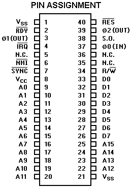
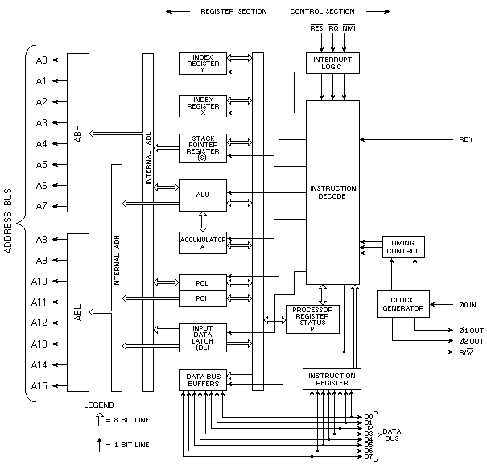

6502 MICROPROCESSOR
FEATURES OF 6502
65K Addressable Bytes of Memory (A0-A15)
Interrupt
On-the-chip Clock
TTL Level Single Phase Input
RC Time Base Input
Crystal Time Base Input
SYNC Signal
Signal (can be used to halt or single cycle execution)
Two-Phase Output Clock for Timing of Support Chips
Interrupt


This page has been created by
Frank Kontros
.
Last updated May 14th, 1999.
 Interrupt
Interrupt Signal (can be used to halt or single cycle execution)
Signal (can be used to halt or single cycle execution) Interrupt
Interrupt